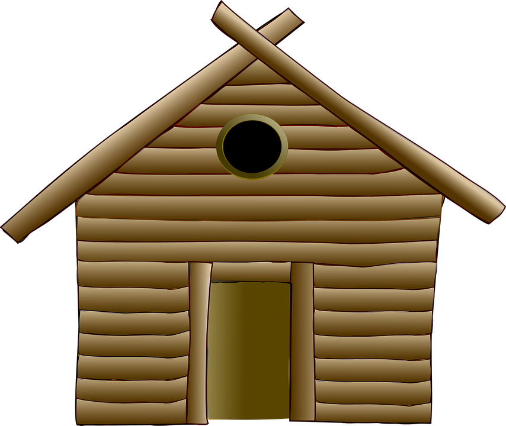

// jshint global Polymer
<!--
Permission to use, copy, modify, and/or distribute this software for any
purpose with or without fee is hereby granted, provided that the above
copyright notice and this permission notice appear in all copies.

THE SOFTWARE IS PROVIDED "AS IS" AND THE AUTHOR DISCLAIMS ALL WARRANTIES
WITH REGARD TO THIS SOFTWARE INCLUDING ALL IMPLIED WARRANTIES OF
MERCHANTABILITY AND FITNESS. IN NO EVENT SHALL THE AUTHOR BE LIABLE FOR
ANY SPECIAL, DIRECT, INDIRECT, OR CONSEQUENTIAL DAMAGES OR ANY DAMAGES
WHATSOEVER RESULTING FROM LOSS OF USE, DATA OR PROFITS, WHETHER IN AN
ACTION OF CONTRACT, NEGLIGENCE OR OTHER TORTIOUS ACTION, ARISING OUT OF
OR IN CONNECTION WITH THE USE OR PERFORMANCE OF THIS SOFTWARE.

Copyright (C) 2015 Andras Sarvari <andras.sarvari@sarvaria.net>
-->

<link rel="import" href="../../../../bower_components/polymer/polymer.html">
<link rel="import" href="../../../../bower_components/iron-flex-layout/iron-flex-layout.html">

<!--
Description:

Main module of the application.
-->

<dom-module id="app-main">

    <!-- Style of the component -->

    <style>
        .main {
        }
    </style>

    <!-- Content of the component -->

    <template>
        <div class="main" style$="{{setStyle(width, height)}}">
            
            
        </div>
    </template>
    
    <!-- Script for the component -->

    <script>
        /*global Polymer sprintf*/
        
        Polymer({
            is:                     'app-main',

            /**
             * Attributes.
             */

            properties: {
                width:           { type: Number, value: 0, notify: true, readyOnly: false },
                height:          { type: Number, value: 0, notify: true, readyOnly: false }
            },
            
            /**
             * Observers.
             */
             
            observers: [
                'redraw(width, height)'
            ],

            /**
             * Polymer READY event.
             */
            
            ready: function() {

                // Reference to the current object

                var self = this;
                
                // Initializing
            },

            /**
             * Sets the style of the main area.
             *
             * @param   {Number}    width       width of the browser
             * @param   {Number}    height      height of the browser
             * @return  {String}    style       style of the main area
             */

            setStyle: function(width, height) {
                return sprintf('width: %dpx; height: %dpx', width, height);
            },
            
            redraw: function(width, height) {

                // Reference to the current object

                var self = this;
            }
        });
    </script>
</dom-module>
